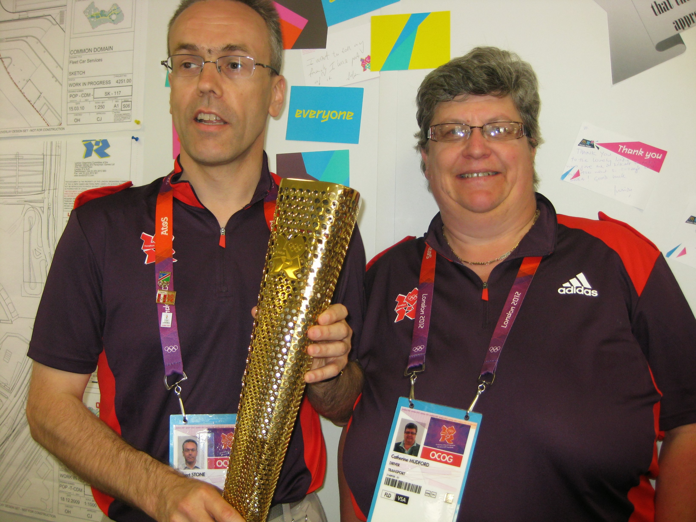
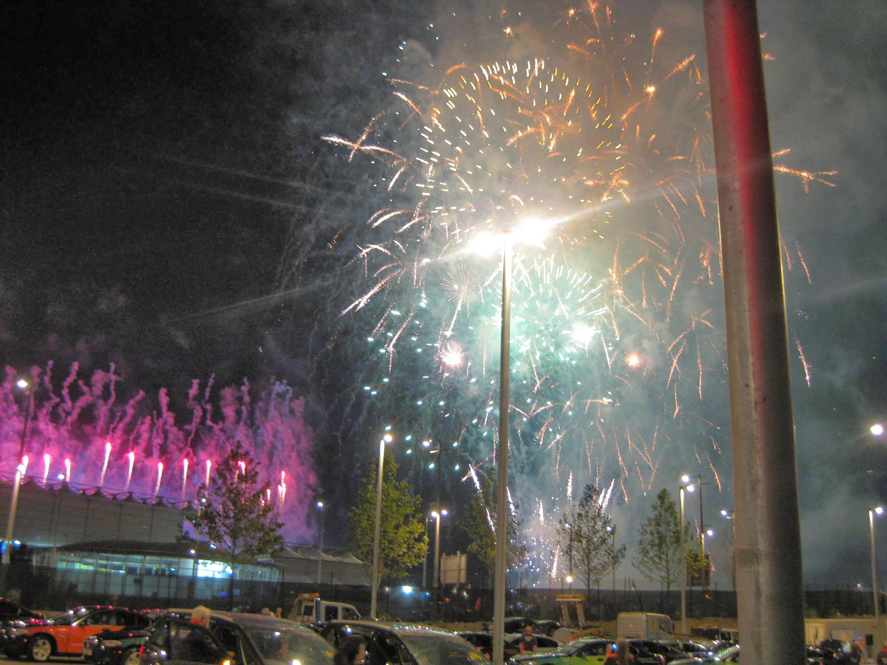

Shift 16 C239 Aqua

Sunday 12th August 2012
My last but one shift and it was the night shift on the night of the Closing Ceremony. The FDO was going to host a
Party. On my way in I passed some squaddies having photos taken with an Olymic Torch.
Was really pleased that it made it's way down to the FDO. It had limited time with us so we had to have our
photos taken in Pairs. The man, obviously, got to hold it. There were more drivers
at the party than I expected. I don't know if I would have travelled if I hadn't been working, but it was a great location to see the fireworks.
One group of drivers were selected to be part of Tango fleet, who were going to pick up
the big wigs (including Sebastian Coe) after the Ceremony hospitality had closed. Much chuntering amongst those not selected as there didn't
seem to be any criteria used.

We watched the Closing Ceremony on a big TV. When the Spice Girls entered, standing up out of a London Black Cab, there was spontaneous booing
from every driver. All of us had had a bad experience with a cabbie. One of the official
cars arrived on the back of a low-loader, having obviously been in a bit of a prang. We were pleased that it wasn't a Charlie, but a T2 car.
The Brazilian segment finished with a mini fireworks display, and the sight of the
flame dying out was
very emotional. The fireworks at the end of the
Ceremony were incredible, both in sight and sound, so loud. Being so close to
the stadium was amazing.
After the Ceremony finished, we were off to work. We had to queue up at the VIP entrance to the Stadium, a spot we'd not been allowed before. I
ended up with 4 Olympic employees in my car, who all sounded like they worked on the spoof BBC show, Twenty Twelve. They gave me the
postcodes of their home addresses, but the first one wasn't recognised by the SatNav. The guy told me it was a new flat at the Elephant & Castle. Sounding
like I'd just passed "The Knowledge", I told him I could get him there without a postcode, which I did. The others were all spread about
South London, but their postcodes worked. Back at FDO, walking out of the Park, after checking the car in, it was great to see the
Stadium and Aquatics Centre
all lit up.